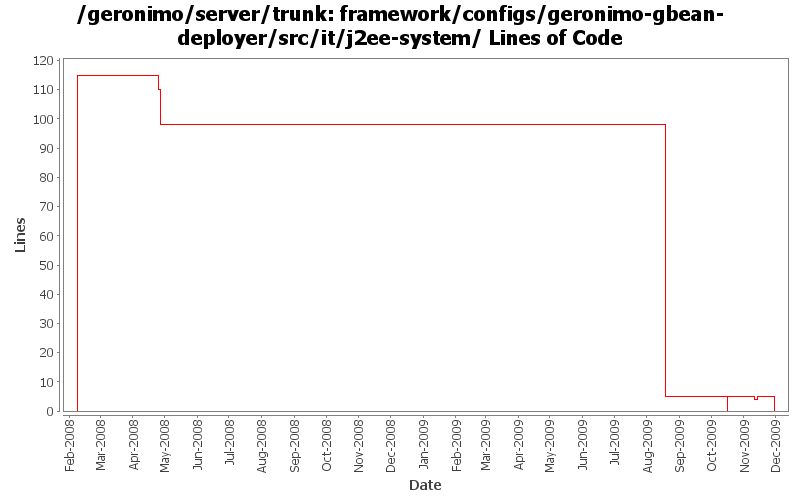

[root]/framework/configs/geronimo-gbean-deployer/src/it/j2ee-system
 src
(0 files, 0 lines)
src
(0 files, 0 lines)
 main
(0 files, 0 lines)
main
(0 files, 0 lines)
 plan
(0 files, 0 lines)
plan
(0 files, 0 lines)
 resources
(0 files, 0 lines)
resources
(0 files, 0 lines)
 META-INF
(0 files, 0 lines)
META-INF
(0 files, 0 lines)
 test
(0 files, 0 lines)
test
(0 files, 0 lines)
 resources
(0 files, 0 lines)
resources
(0 files, 0 lines)
 META-INF
(0 files, 0 lines)
META-INF
(0 files, 0 lines)

| Author | Changes | Lines of Code | Lines per Change |
|---|---|---|---|
| Totals | 37 (100.0%) | 246 (100.0%) | 6.6 |
| djencks | 27 (73.0%) | 231 (93.9%) | 8.5 |
| gawor | 5 (13.5%) | 10 (4.1%) | 2.0 |
| rickmcguire | 2 (5.4%) | 4 (1.6%) | 2.0 |
| dwoods | 1 (2.7%) | 1 (0.4%) | 1.0 |
| jdillon | 2 (5.4%) | 0 (0.0%) | 0.0 |
GERONIMO-4566 port build changes from 2.2 to allow releasing with release plugin
0 lines of code changed in 5 files:
explicitly version spec packages from the runtime jre and restore provided status of geronimo-gbean-deployer
1 lines of code changed in 1 file:
more xbeans cleanup for the tomcat plugin
3 lines of code changed in 1 file:
GERONIMO-4916 step 2 move sandbox osgi framework into trunk
5 lines of code changed in 5 files:
GERONIMO-4916 step 1 remove old framwork
0 lines of code changed in 5 files:
remove commented out stuff from IT pom
0 lines of code changed in 1 file:
GERONIMO-4655 upgrade version to 3.0-SNAPSHOT, make a few things more consistent
5 lines of code changed in 1 file:
make its work with new jaxb spec
91 lines of code changed in 1 file:
GERONIMO-4628 fix some it configuration problems caused by moving the filtered plan file location
1 lines of code changed in 1 file:
GERONIMO-4684, GERONIMO-4685 Use our tomcat build, configure tomcat using server.xml. Also includes some spec jar updates including using our jaxb spec jar
8 lines of code changed in 1 file:
remove duplicate xpp3/xpp3 depend and only include xpp3_min
1 lines of code changed in 1 file:
GERONIMO-4375 xbean upgrade requires asm upgrade. GERONIMO-4360 minor build fix to increase tm version independence
3 lines of code changed in 1 file:
upgrade woodstox to latest 3.2.7 version
1 lines of code changed in 1 file:
GERONIMO-4239, sort of. Use transitive depenedencies in c-m-p everywhere. This may break stuff.... let me know
3 lines of code changed in 1 file:
create temp files in basedir
1 lines of code changed in 1 file:
upgrade to jaxb 2.1 (GERONIMO-4234)
2 lines of code changed in 1 file:
(GERONIMO-2463) Drop OGNL for condition parsing, only support Jexl for now
0 lines of code changed in 1 file:
(GERONIMO-3985) Use SLF4J as the primary logging facade for Geronimo
0 lines of code changed in 1 file:
fix j2ee-system test
1 lines of code changed in 1 file:
fix versions
5 lines of code changed in 1 file:
GERONIMO-3827 port from 2.1 move the other c-m-p itests to where the dependencies are available during bootstrap
115 lines of code changed in 5 files: